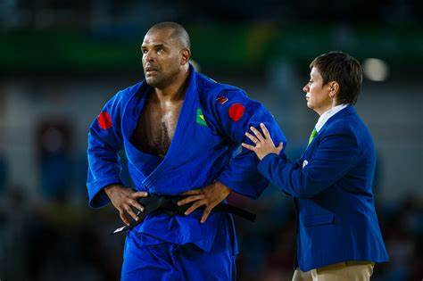
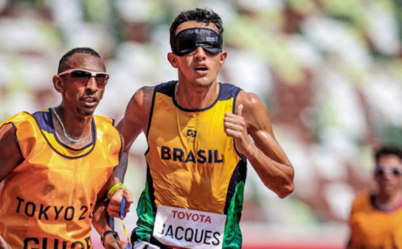
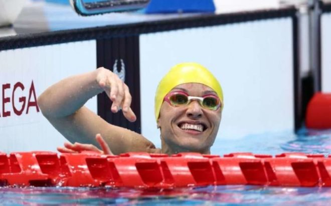

Gabriel Bandeira
Provando que vai dar conta do recado dentro das piscinas

Petrúcio Ferreira
O porta-bandeira dos Jogos de Tóquio, o ‘Bolt’ das Paralimpíadas

Antônio Tenório
O maior judoca Paralímpico da história.

Yeltsin Jacques
Protagonizou a conquista da centésima medalha de ouro Paralímpica do Brasil.

Daniel Dias
O maior nadador Paralímpico de todos os tempos.

Maria Carolina
A primeira atleta brasileira a conseguir três ouros em uma única edição